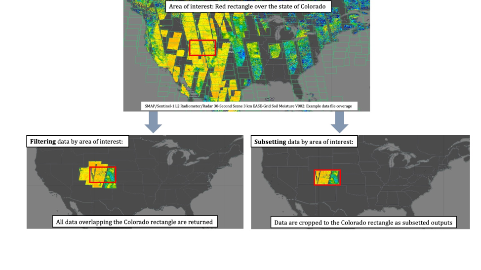

# Suppress warnings
import warnings
warnings.simplefilter('ignore')
warnings.filterwarnings('ignore')
# Search & Access
import earthaccess
from pprint import pprint
import xarray as xr
import hvplot.xarray #plot
# Harmony services
import geopandas as gpd
import geoviews as gv
gv.extension('bokeh', 'matplotlib')
from harmony import BBox, Client, Collection, Request, LinkType
import datetime as dt
import s3fs
%matplotlib inlineNASA Earthdata Cloud Clinic
Summary
Welcome to the NASA Earthdata Cloud Clinic!
We will focus on NASA Earthdata search & access in the cloud.
We will use
earthaccessfor data search and direct cloud access, followed byxarrayfor subsetting. Both are open source python libraries. We will also discover data using Earthdata Search.We will be accessing data directly from the NASA Earthdata Cloud hosted in Amazon Web Services (AWS) Cloud, specifically in the us-west-2 region. This shared compute environment (JupyterHub) is also running in the same location in the AWS Cloud. We will then load the data into Python as an
xarraydataset.See second part of this notebook for examples using subsetting servises to downselect and work with data for your use case.
See the bottom of the notebook for additional resources, including several tutorials that served as a foundation for this clinic.
A note on earthaccess python library
In this example we will use the earthaccess library to search for data collections from NASA Earthdata. earthaccess is a Python library that simplifies data discovery and access to NASA Earth science data by providing an abstraction layer for NASA’s Common Metadata Repository (CMR) API Search API. The library makes searching for data more approachable by using a simpler notation instead of low level HTTP queries. earthaccess takes the trouble out of Earthdata Login authentication, makes search easier, and provides a stream-line way to download or stream search results into an xarray object for easy data access. It can be used on and off the cloud.
For more on earthaccess visit the earthaccess documentation site. Be aware that earthaccess is under active development, and your use and feedback help improve it!
A note on subsetting
In addition to directly accessing the files archived and distributed by each of the NASA DAACs, many datasets also support services that allow us to customize the data via subsetting, reformatting, reprojection/regridding, and file aggregation. What does subsetting mean? Here’s a generalized graphic of what we mean.

A note on jargon:
“direct cloud access” goes by several other names including “direct S3 access”, “direct access”, “direct in-region access”, “in-cloud data streaming”. And “subsetting” is also called “transformation”.
Learning Objectives
- Utilize the
earthaccesspython library to search for data using spatial and temporal filters and explore search results - Stream data (i.e. perform in-region direct access of data) from an Amazon Simple Storage Service (S3) bucket where NASA Earthdata data is archived into our own cloud workspace, here in the Jupyter Lab/Notebook.
- Extract variables and spatial slices from an
xarraydataset Plot data
- Conceptualize data subsetting services provided by NASA Earthdata, including Harmony
- Plot a polygon geojson file with a basemap using
geoviews
Prerequisites
First we’ll import python packages and set our authentication that will be used for both of our access and subsetting methods.
This tutorial is meant to be run in the AWS cloud in the us-west-2 region. You’ll need to be aware that data in NASA’s Earthdata Cloud reside in Amazon Web Services (AWS) Simple Storage Service (S3) buckets. Access is provided via temporary credentials; this free access is limited to requests made within the US West (Oregon) (code: us-west-2) AWS region. While this compute location is required for direct S3 access, all data in Earthdata Cloud are still freely available via download.
Import Required Packages
Authentication for NASA Earthdata
An Earthdata Login account is required to access data from the NASA Earthdata system. If you don’t already have one, visit https://urs.earthdata.nasa.gov to register and manage your Earthdata Login account. This account is free to create and only takes a moment to set up.
The first step is to get the correct authentication that will allow us to get cloud-hosted data from NASA. This is all done through Earthdata Login. We can use the earthaccess library here, where the login method also gets the correct AWS credentials.
The first time you run this it will ask you for your Earthdata Login username and password, and stores it in a .netrc file. After that, each time you authenticate with auth = earthaccess.login() it will log you in automatically.
# auth = earthaccess.login(strategy="interactive", persist=True)
auth = earthaccess.login()1. earthaccess + xarray
earthaccess python library is an open-source library to simplify Earthdata Cloud search and access.
Search for data
There are multiple keywords we can use to discovery data from collections such as short_name, concept_id, and doi. The table below contains the short_name for some collections we are interested in for other exercises. Each of these can be used to search for data or information related to the collection we are interested in.
| Shortname | Description | Example Temporal/Spatial parameters |
|---|---|---|
| SEA_SURFACE_HEIGHT_ALT_GRIDS_L4_2SATS_5DAY_6THDEG_V_JPL2205 | gridded Sea Surface Height Anomalies (SSHA) above a mean sea surface, on a 1/6th degree grid every 5 days. | temporal=(“2021-07-01”, “2021-09-30”) |
| MUR25-JPL-L4-GLOB-v04.2 | MUR Sea Surface Temperature | temporal=(“2023-07-01”, “2023-07-03”) |
| SMAP_RSS_L3_SSS_SMI_8DAY-RUNNINGMEAN_V5 | SMAP Sea Surface Salinity 8 day running mean | temporal=(“2019-08-01T00:00:00”, “2019-10-01T00:00:00”) |
But wait…You may be asking “how can we find the short_name for collections not in the table above?”.
–> Let’s take a quick detour and head to Earthdata Search GUI to gather more information about our dataset of interest. The dataset “short name” can be found by clicking on the Info button on our collection search result, and we can paste that into a python variable.
(Side Note: Both earthaccess python libray and the Earthdata Search (GUI) leverage the Common Metadata Repository (CMR) API to search for collections and granules.)
Here we use the search_data function of earthaccess to query based on the short_name of interest, as well as other paramters such as temporal range:
data_name = "SEA_SURFACE_HEIGHT_ALT_GRIDS_L4_2SATS_5DAY_6THDEG_V_JPL2205"
results = earthaccess.search_data(
short_name=data_name,
cloud_hosted=True,
temporal=("2021-07-01", "2021-09-30"),
)According to PO.DAAC’s dataset landing page, gridded Sea Surface Height Anomalies (SSHA) above a mean sea surface are provided. The data are produced on a 1/6th degree grid every 5 days.
We can discover more information about the matching files:
pprint(results[0])Access data
Since we are working in the AWS us-west-2 region, we can stream data directly to xarray. We are using the open_mfdataset() (multi-file) method, which is required when using earthaccess.
(Tips: To open a single file, if troubleshooting for example: ds = xr.open_dataset(earthaccess.open(results)[0]))
ds = xr.open_mfdataset(earthaccess.open(results))
dsPlot the data
Let’s make a quick interactive plot of the data using an open source tool call hvplot. Because our data is 3d and has a time component, we can also preview the data over time, using the slider of hvplot.
ds.SLA.hvplot.image(x='Longitude', y='Latitude', cmap='RdBu', clim=(-2,2), title="Sea Level Anomaly Estimate (m)")Subset data
We can create a subsetted xarray dataset by extracting the SLA variable and slicing the dataset by a smaller area of interest near the state of Baja, Mexico.
ds_subset = ds['SLA'].sel(Latitude=slice(15.8, 35.9), Longitude=slice(234.5,260.5))
ds_subsetds_subset.hvplot.image(x='Longitude', y='Latitude', cmap='RdBu', clim=(-0.5, 0.5), title="Sea Level Anomaly Estimate (m)")Exercise
Let’s explore other datasets from the table above
MUR SST
data_name = "MUR25-JPL-L4-GLOB-v04.2"
sst_results = earthaccess.search_data(
short_name=data_name,
cloud_hosted=True,
temporal=("2023-07-01", "2023-07-03"),
)pprint(sst_results[0])ds = xr.open_mfdataset(earthaccess.open(sst_results))
dsds.sst_anomaly.hvplot.image(x='lon', y='lat', cmap='RdBu', clim=(-5,5), title="Sea Surface Temperature Anomaly (K)")SMAP Sea Surface Salinity
data_name="SMAP_RSS_L3_SSS_SMI_8DAY-RUNNINGMEAN_V5"
smap_results = earthaccess.search_data(
short_name=data_name,
cloud_hosted=True,
temporal=("2019-08-01T00:00:00", "2019-10-01T00:00:00"),
)pprint(smap_results[0])ds = xr.open_mfdataset(earthaccess.open(smap_results))
dsds.sss_smap.hvplot.image(x='lon', y='lat', cmap='plasma', clim=(20, 32), title="SMAP_RSS_L3_SSS_SMI_8DAY-RUNNINGMEAN_V5")ds_subset = ds['sss_smap'].sel(lat=slice(61, 75), lon=slice(160,170))
ds_subsetds_subset.hvplot.image(x='lon', y='lat', cmap='plasma', clim=(0, 45), title="SMAP_RSS_L3_SSS_SMI_8DAY-RUNNINGMEAN_V5")Spatial search tip:
To narrow down your search based on a geographic bounding box, we can pass the bounding_box= paramters to earthaccess, as in the example below:
#bounding_box=(lower_left_lon, lower_left_lat, upper_right_lon, upper_right_lat)
bounding_box=(-99, 18.19232, -78.85547, 31.23754)
2. Harmony-py + xarray
Bonus cloud clinic topic that we won’t cover live together: subsetting with Earthdata Harmony API services
We can also use the Harmony-py python library for direct cloud access & data subsetting: * Requesting a subset of data from the GHRSST Level 4 MUR Global Foundation Sea Surface Temperature Analysis (v4.1) dataset using a vector-based geospatial file. * This dataset can also be viewed in Earthdata Search.
We will be accessing a subsetted NetCDF-4 file using Transformation Services in the Cloud.
Using Earthdata Search, we can find datasets that support these services using the “Customizable” filter.
We will find, request, and open customized data using Harmony, below.
Define area of interest
First, use geopandas to read in a geojson file containing a polygon feature over the Gulf of Mexico. The geojson file is found in the ~/data directory.
geojson_path = './data/gulf.json'
gdf = gpd.read_file(geojson_path) #Return a GeoDataFrame objectWe can plot the polygon using the geoviews package that we imported as gv with ‘bokeh’ and ‘matplotlib’ extensions. The following has reasonable width, height, color, and line widths to view our polygon when it is overlayed on a base tile map. We can view this with the * operator.
base = gv.tile_sources.EsriImagery.opts(width=650, height=500)
ocean_map = gv.Polygons(gdf).opts(line_color='yellow', line_width=5, color=None)
base * ocean_mapCreate a subset request
Here we’ll create a request for a spatial subset of data.
First, we need to create a Harmony Client, which is what we will interact with to submit and inspect a data request to Harmony, as well as to retrieve results.
When creating the Client, we need to provide Earthdata Login credentials. This basic line below assumes that we have a .netrc available. See the Earthdata Cloud Cookbook appendix for more information on Earthdata Login and netrc setup.
harmony_client = Client()See the harmony-py documentation for details on how to construct your request.
sst_short_name="MUR-JPL-L4-GLOB-v4.1"
request = Request(
collection=Collection(id=sst_short_name),
shape=geojson_path,
temporal={
'start': dt.datetime(2021, 8, 1, 1),
'stop': dt.datetime(2021, 8, 1, 2)
},
)Submit a subset request
Now that the request is created, we can now submit it to Harmony using the Harmony Client object. A job id is returned, which is a unique identifier that represents the submitted request.
job_id = harmony_client.submit(request)
job_idCheck request status
Depending on the size of the request, it may be helpful to wait until the request has completed processing before the remainder of the code is executed. The wait_for_processing() method will block subsequent lines of code while optionally showing a progress bar.
harmony_client.wait_for_processing(job_id, show_progress=True)We can view Harmony job response and output URLs Once the data request has finished processing, we can view details on the job that was submitted to Harmony, including the API call to Harmony, and informational messages on the request if available.
result_json() calls wait_for_processing() and returns the complete job in JSON format once processing is complete.
data = harmony_client.result_json(job_id)
pprint(data)Access data
Just like above, the subsetted outputs produced by Harmony can be accessed directly from the cloud.
First, we’ll retrieve list of output URLs.
The result_urls() method calls wait_for_processing() and returns a list of the processed data URLs once processing is complete. You may optionally show the progress bar as shown below.
results = harmony_client.result_urls(job_id, link_type=LinkType.s3)
urls = list(results)
url = urls[0]
print(url)Using aws_credentials you can retrieve the credentials needed to access the Harmony s3 staging bucket and its contents.
creds = harmony_client.aws_credentials()Open staged files with s3fs and xarray
We use the AWS s3fs package to create a file system that can then be read by xarray:
s3_fs = s3fs.S3FileSystem(
key=creds['aws_access_key_id'],
secret=creds['aws_secret_access_key'],
token=creds['aws_session_token'],
client_kwargs={'region_name':'us-west-2'},
)Now that we have our s3 file system set, including our declared credentials, we’ll use that to open the url, and read in the file through xarray. This extra step is needed because xarray cannot open the S3 location directly. Instead, the S3 file object is passed to xarray, in order to then open the dataset.
f = s3_fs.open(url, mode='rb')
ds = xr.open_dataset(f)
dsAs before, we use the xarray built in plotting function to create a simple plot along the x and y dimensions of the dataset. We can see that the data are subsetted to our polygon:
ds.analysed_sst.plot();Additional Resources
Tutorials
This clinic was based off of several notebook tutorials including those presented during past workshop events, along with other materials co-created by the NASA Openscapes mentors: * 2021 Earthdata Cloud Hackathon * 2021 AGU Workshop * Accessing and working with ICESat-2 data in the cloud * Analyzing Sea Level Rise Using Earth Data in the Cloud
Cloud services
The examples used in the clinic provide an abbreviated and simplified workflow to explore access and subsetting options available through the Earthdata Cloud. There are several other options that can be used to interact with data in the Earthdata Cloud including:
- OPeNDAP
- Hyrax provides direct access to subsetting of NASA data using Python or your favorite analysis tool
- Tutorial highlighting OPeNDAP usage: https://nasa-openscapes.github.io/earthdata-cloud-cookbook/how-tos/working-locally/Earthdata_Cloud__Data_Access_OPeNDAP_Example.html
- Zarr-EOSDIS-Store
- The zarr-eosdis-store library allows NASA EOSDIS Collections to be accessed efficiently by the Zarr Python library, provided they have a sidecar DMR++ metadata file generated.
- Tutorial highlighting this library’s usage: https://nasa-openscapes.github.io/2021-Cloud-Hackathon/tutorials/09_Zarr_Access.html
Support
- Earthdata Forum
- User Services and community support for all things NASA Earthdata, including Earthdata Cloud
- Earthdata Webinar series
- Webinars from DAACs and other groups across EOSDIS including guidance on working with Earthdata Cloud
- See the Earthdata YouTube channel for more videos